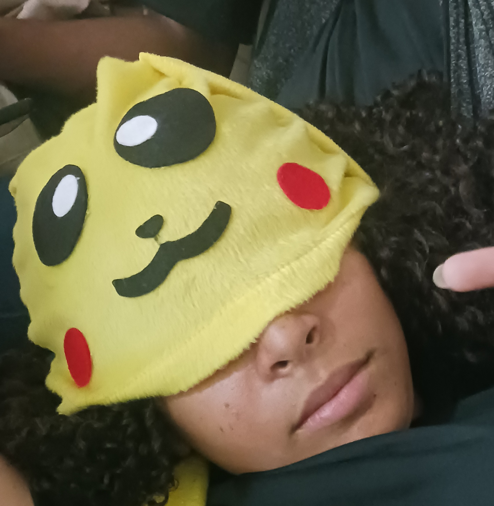
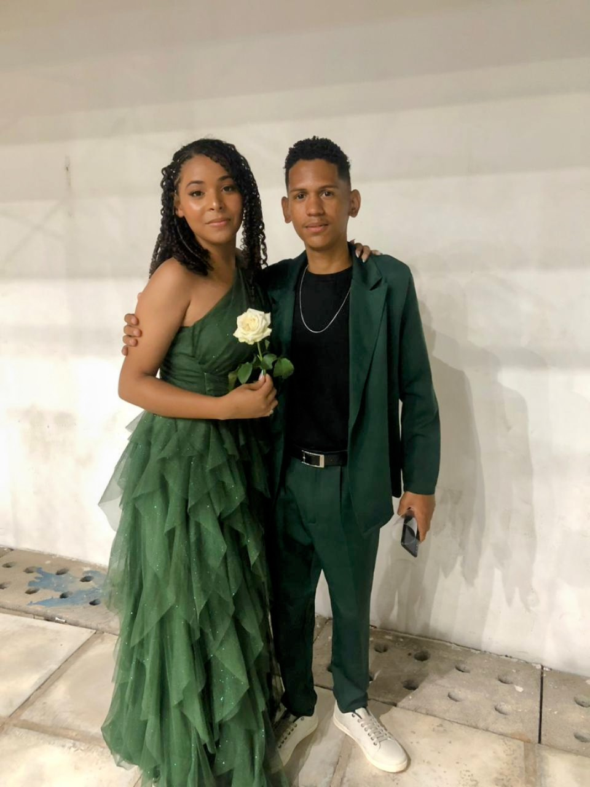

CLARA
“Clara, essa é pra tu.”
Pode abrir tranquila: não é boleto.
Onde tudo começou
A gente se conheceu na escola, naquela época em que uma convivência que parecia tão comum acabou dando início a uma história que já dura quase seis anos. E, bom... digamos que eu acabei encontrando meu espaço por ali, mesmo sem imaginar tudo o que aquela aproximação ainda renderia.
No começo, era só resenha, piada sem graça e aquela troca de farpas básica de quem parecia não conseguir passar cinco minutos sem alfinetar o outro.
Mas o tempo foi passando, os anos foram somando, e o que parecia ser só mais uma amizade comum de corredor de escola acabou se tornando uma das coisas mais importantes e firmes que a gente construiu.
Quase seis anos depois, olhando para trás, dá até um pouco de graça ver como tudo começou de um jeito despretensioso. Porque, no fim das contas, foi exatamente essa aproximação meio torta que deu certo.
Nosso álbum de memórias
Momentos guardados com carinho (e muita resenha).

Quando a gente achava que entendia da vida...
Escola • Anos atrásOnde tem conversa fiada, tem a gente.
Dia a dia
Quase 6 anos e contando...
História vivaO filme que eu não gostava, mas assisti mesmo assim
As Guerreiras do K-Pop
“Eu juro que não curti... (mentira)”
Crítica cinematográfica duvidosa
Eu lembro de quando a gente assistiu a “As Guerreiras do K-Pop”. enquanto eu tava te acompanhando no hospital. E você sabe muito bem que eu achava aquela música enjoativa. Na verdade, ainda acho, KKKKK.
Mas olha que coisa... hoje, quando ela toca, eu lembro de você. Não porque passei a gostar da música, mas porque ela acabou ficando ligada àquela lembrança nossa. E é engraçado como funciona a amizade, né? Até uma música que eu não gosto consegue me fazer lembrar de alguém que eu gosto tanto. Mas não te empolga não, que a música continua sendo enjoativa. KKKKK.
A amizade também é presença
Nem tudo na nossa amizade foi feito de risadas, brincadeiras e implicâncias. A gente também teve nossos desentendimentos, porque, por mais que uma amizade seja boa, isso não significa que duas pessoas vão concordar em tudo ou nunca cometer erros.
Teve uma época em que a gente passou um tempo sem se falar. Até que um dia fui à tua casa, reconheci onde tinha errado e te pedi desculpas. Não foi como se tudo voltasse ao normal de uma hora pra outra. A gente foi retomando a amizade aos poucos, voltando a conversar, e as coisas foram se ajeitando com o tempo.
“Uma amizade verdadeira não precisa ser perfeita para ser importante. Ela também é construída por presença, confiança, respeito e pela disposição de voltar a conversar.”
Uma coisa que aprendi é que reconhecer um erro não diminui ninguém. Pelo contrário, é preciso ter maturidade para assumir a própria responsabilidade, deixar as desculpas de lado e tentar consertar aquilo que a gente fez de errado. Afinal, uma amizade não se mantém porque ninguém erra, mas porque existe respeito suficiente para reconhecer quando é preciso fazer diferente. E acho que é justamente isso que faz nossa amizade ser tão importante. A gente já teve motivos para se afastar, mas também encontrou motivos para continuar. E, olhando para tudo que vivemos até aqui, fico feliz que aquela fase tenha sido apenas uma parte da nossa história, e não o fim dela.
Um pequeno jardim de lembranças
Clique nas flores abaixo para revelar anotações escondidas.
A Carta
Um envelope guardado para o momento certo.
Carta para Clara
Toque no botão abaixo para abrir o envelope.
Antes de qualquer coisa, não vai se acostumando com esse meu lado escritor não, viu? KKKKK. Aproveita enquanto dura, porque daqui a pouco eu volto a te perturbar normalmente.
Eu poderia ter feito essa carta cheia de palavras bonitas, mas acho que você já me conhece o suficiente pra saber que isso não combina muito comigo. Então vou falar do meu jeito mesmo.
Tem uma coisa que eu queria que você soubesse: eu admiro a pessoa que você é. E, mesmo que eu não fique dizendo isso por aí, quero muito te ver conquistando as coisas que você deseja, encontrando seus caminhos e tendo muitos motivos pra sorrir.
A Também espero que você nunca sinta que precisa ser forte o tempo inteiro ou dar conta de tudo sozinha. Nem sempre vou saber o que dizer ou como ajudar, mas quero que você saiba que pode me procurar.
E não importa quantas coisas mudem daqui pra frente, espero que a gente continue tendo essa liberdade de conversar besteira, implicar um com o outro e ser quem a gente é, sem precisar ficar medindo cada palavra.
Pronto. Já falei demais por hoje.
E, por favor, não usa essa carta contra mim na próxima resenha. Eu nego tudo. KKKKK.
Com carinho (e sem perder o costume da zueira),
— Teu amigo.
Ainda não acabou...
Mais algumas lembranças...
Achou que tinha terminado? KKKKK. Ainda tem mais algumas lembranças guardadas por aqui. Dessa vez, as imagens falam por si.
Nossos registros
E tem vídeo também! KKKKK
Registro 01
Registro 02
Registro 03